The source of content in this notebook is the Chapter F1.0: JavaScript and the Earth Engine API section of the Google Doc F1 - Earth Engine Fundamentals and Applications - EEFA - Live Document - 2021+ authored by Ujaval Gandhi.
Overview
Learning Outcomes
- Familiarity with the Earth Engine Code Editor.
- Familiarity with the JavaScript syntax.
- Ability to use the Earth Engine API functions from the Code Editor.
Assumes you know how to:
- Sign up for an Earth Engine account (See the Google documentation for details).
- Access the Earth Engine Code Editor (See the Google documentation for details).
Introduction to Theory
The Earth Engine API
Google Earth Engine is a cloud-based platform for scientific data analysis. It provides ready-to-use, cloud-hosted datasets and a large pool of servers. One feature that makes Earth Engine particularly attractive is the ability to run large computations very fast by distributing them across a large pool of servers. The ability to efficiently use cloud-hosted datasets and computation is enabled by the Earth Engine API.
An API is a way to communicate with Earth Engine servers. It allows you to specify what computation you would like to do, and then to receive the results. The API is designed so that users do not need to worry about how the computation is distributed across a cluster of machines and the results are assembled. Users of the API simply specify what needs to be done. This greatly simplifies the code by hiding the implementation detail from the users. It also makes Earth Engine very approachable for users who are not familiar with writing code.
Earth Engine API is designed to be language agnostic. Google provides official client libraries to use the API from both JavaScript and Python. The API remains largely the same regardless of the programming language you use. The main difference is the syntax used to call the API functions. Once you learn the syntax for programming languages, your code can be adapted easily because they all use the same API functions.
Why JavaScript?
JavaScript may not be the first choice of programming language for many researchers and data scientists, and some may be wondering why this book is based on the JavaScript API instead of Python or R.
The Earth Engine JavaScript API is the most mature and easiest to use when getting started. The Earth Engine platform comes with a web-based Code Editor that allows you to start using the Earth Engine JavaScript API without any installation. It also provides additional functionality to display your results on a map, save your scripts, access documentation, manage tasks, and more. It has a one-click mechanism to share your code with other users—allowing for easy reproducibility and collaboration. In addition, the JavaScript API comes with a user interface library, which allows you to create charts and web-based applications with little effort.
In practice, you do not need to become a JavaScript expert to use Earth Engine. The basic syntax described here should be sufficient. A good tip is that if you find yourself doing something complicated in JavaScript, it might be done much better in Earth Engine. All the important computations in Earth Engine need to use the API functions, and even a basic operation—such as adding two numbers in Earth Engine—should be done using the Earth Engine API.
Practicum
If you have not already done so, be sure to add the book’s code repository to the Code Editor by entering https://code.earthengine.google.com/?accept_repo=projects/gee-edu/book into your browser. The book’s scripts will then be available in the script manager panel.
Section 1: Getting Started in the Code Editor
The Code Editor is an integrated development environment for the Earth Engine JavaScript API. It offers an easy way to type, debug, run, and manage code. Once you have followed Google’s documentation on registering for an Earth Engine account, you should follow the documentation to open the Code Editor. When you first visit the Code Editor, you will see a screen such as the one shown in Figure 1.
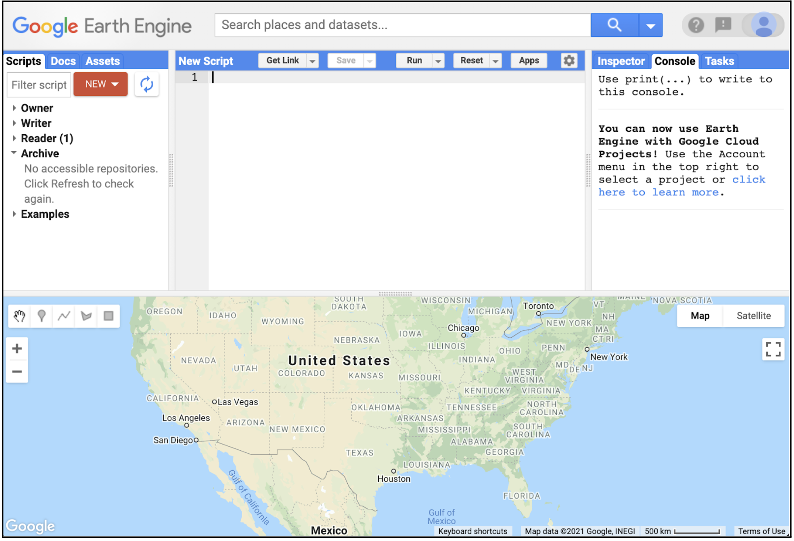
The Code Editor (Figure 1) allows you to type JavaScript code and execute it. When you are first learning a new language and getting used to a new programming environment, it is customary to make a program to display the words “Hello World.” This is a fun way to start coding that shows you how to give input to the program and how to execute it. It also shows where the program displays the output. Doing this in JavaScript is quite simple. Copy the following code into the center panel.
print('Hello World')Hello World
The line of code above uses the JavaScript print function to print the text “Hello World” to the screen. Once you enter the code, click the Run button. The output will be displayed on the upper right-hand panel under the Console tab (Figure 2).
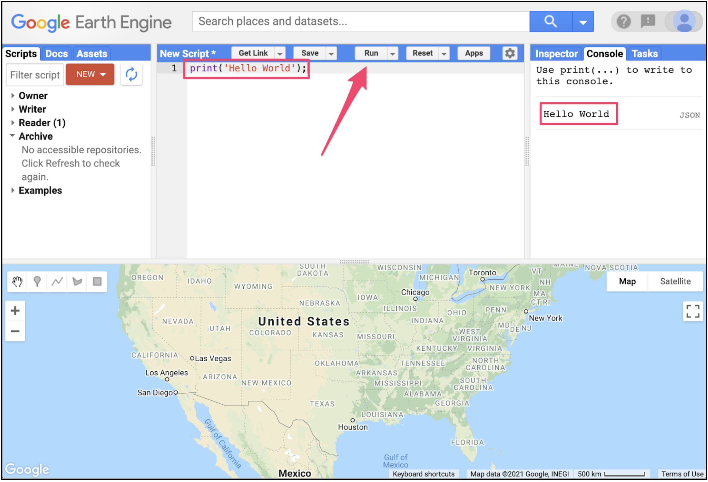
You now know where to type your code, how to run it, and where to look for the output. You just wrote your first Earth Engine script and may want to save it. Click the Save button (Fig. F1.0.3).
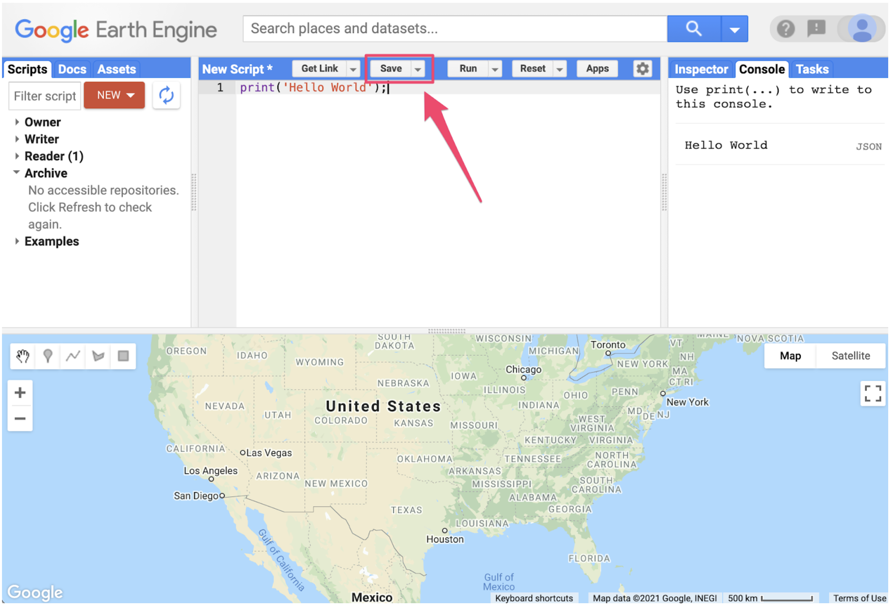
If this is your first time using the Code Editor, you will be prompted to create a home folder. This is a folder in the cloud where all your code will be saved. You can pick a name of your choice, but remember that it cannot be changed and will forever be associated with your account. A good choice for the name would be your Google Account username (Fig. F1.0.4).
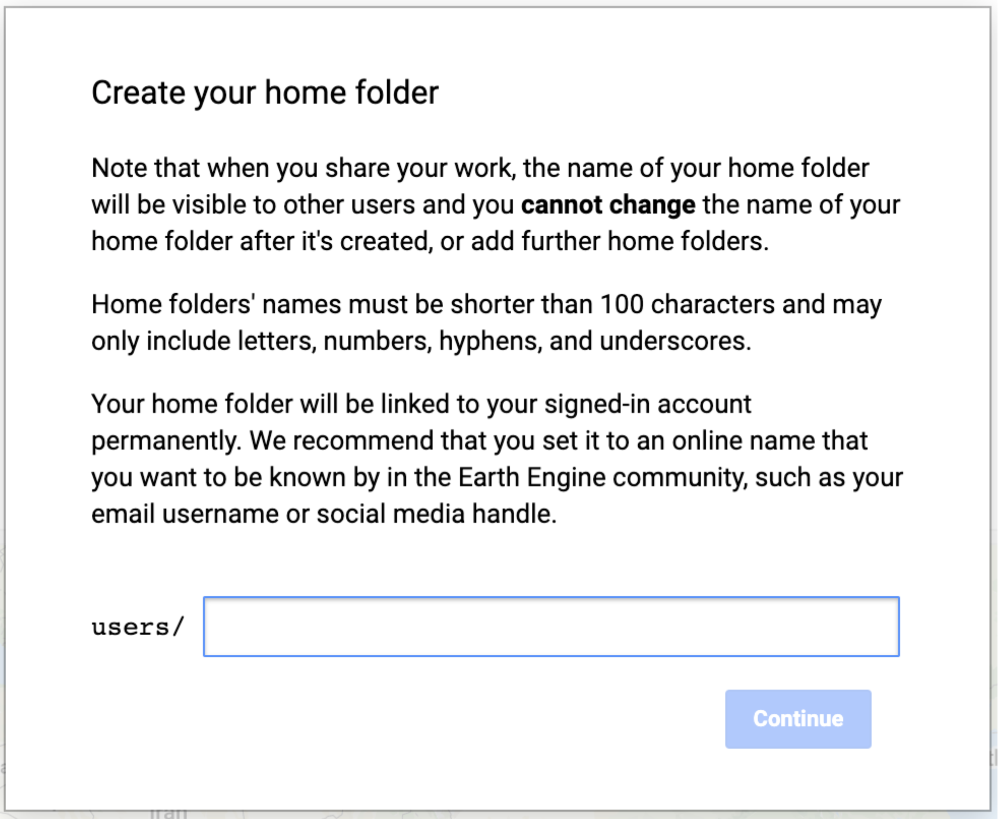
Once your home folder is created, you will be prompted to enter a new repository. A repository can help you organize and share code. Your account can have multiple repositories and each repository can have multiple scripts inside it. To get started, you can create a repository named “default” (Fig. F1.0.5).
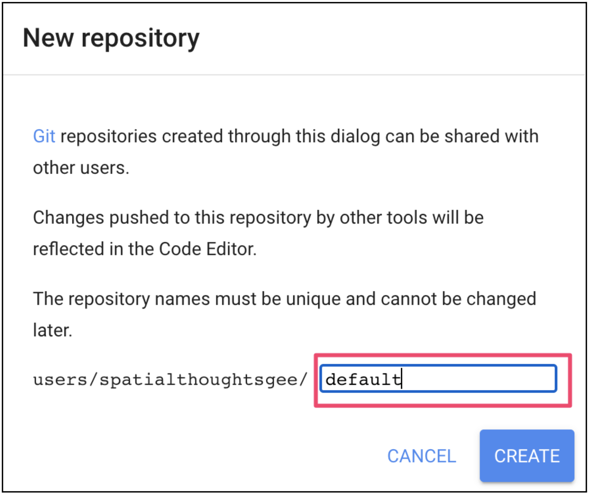
Finally, you will be able to save your script inside the newly created repository. Enter the name “hello_world” and click OK (Fig. F1.0.6).
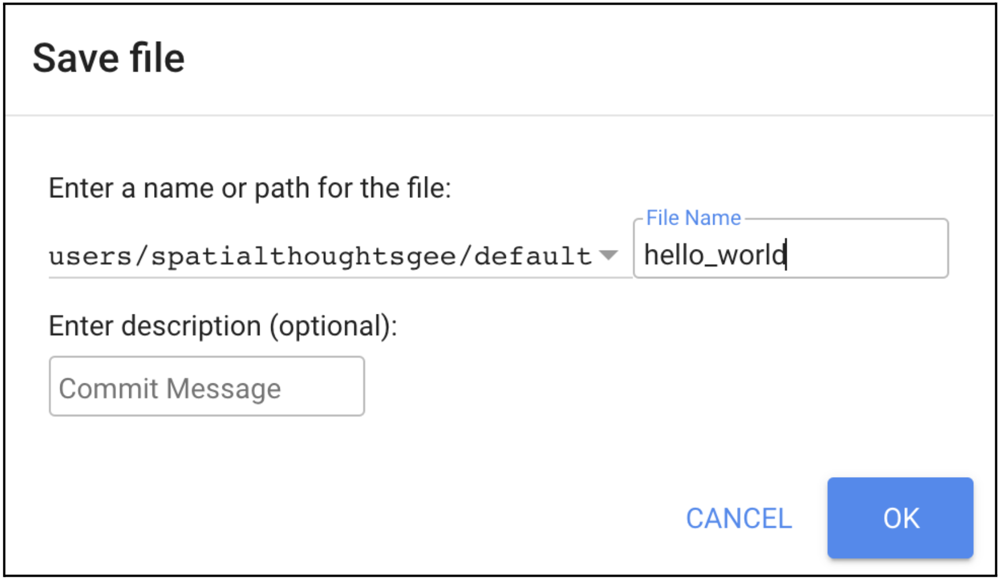
Once the script is saved, it will appear in the script manager panel (Fig. F1.0.7). The scripts are saved in the cloud and will always be available to you when you open the Code Editor.
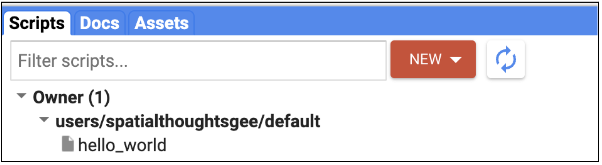
Now you should be familiar with how to create, run, and save your scripts in the Code Editor. You are ready to start learning the basics of JavaScript.
Section 2. JavaScript Basics
To be able to construct a script for your analysis, you will need to use JavaScript. This section covers the JavaScript syntax and basic data structures. In the sections that follow, you will see more JavaScript code, noted in a distinct font and with shaded background. As you encounter code, paste it into the Code Editor and run the script.
Variables
In a programming language, variables are used to store data values. In JavaScript, a variable is defined using the var keyword followed by the name of the variable. The code below assigns the text “San Francisco” to the variable named city. Note that the text string in the code should be surrounded by quotes. You are free to use either ’ (single quotes) or “ (double quotes), and they must match at the beginning and end of each string. In your programs, it is advisable to be consistent—use either single quotes or double quotes throughout a given script (the code in this book generally uses single quotes for code). Each statement of your script should typically end with a semicolon, although Earth Engine’s code editor does not require it.
var city = 'San Francisco';If you print the variable city, you will get the value stored in the variable (San Francisco) printed in the Console.
print(city);When you assign a text value, the variable is automatically assigned the type string. You can also assign numbers to variables and create variables of type number. The following code creates a new variable called population and assigns a number as its value.
var population = 873965;
print(population);Lists
It is helpful to be able to store multiple values in a single variable. JavaScript provides a data structure called a list that can hold multiple values. We can create a new list using the square brackets [] and adding multiple values separated by a comma.
var cities = ['San Francisco', 'Los Angeles', 'New York', 'Atlanta'];
print(cities);If you look at the output in the Console, you will see “List” with an expander arrow (▹) next to it. Clicking on the arrow will expand the list and show you its content. You will notice that along with the four items in the list, there is a number next to each value. This is the index of each item. It allows you to refer to each item in the list using a numeric value that indicates its position in the list.
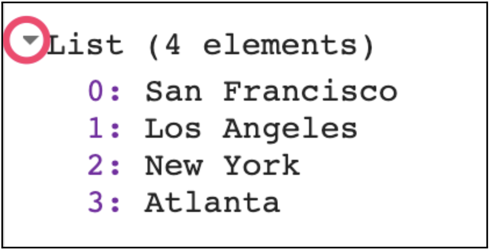
Objects
Lists allow you to store multiple values in a single container variable. While useful, it is not appropriate to store structured data. It is helpful to be able to refer to each item with its name rather than its position. Objects in JavaScript allow you to store key-value pairs, where each value can be referred to by its key. You can create a dictionary using the curly braces {}. The code below creates an object called cityData with some information about San Francisco.
Note a few important things about the JavaScript syntax here. First, we can use multiple lines to define the object. Only when we put in the semicolon (;) is the command considered complete. This helps format the code to make it more readable. Also note the choice of the variable name cityData. The variable contains two words. The first word is in lowercase, and the first letter of the second word is capitalized. This type of naming scheme of joining multiple words into a single variable name is called “camel case.” While it is not mandatory to name your variables using this scheme, it is considered a good practice to follow. Functions and parameters in the Earth Engine API follow this convention, so your code will be much more readable if you follow it too.
var cityData = {
'city': 'San Francisco',
'coordinates': [-122.4194, 37.7749],
'population': 873965
};
print(cityData);The object will be printed in the Console. You can see that instead of a numeric index, each item has a label. This is known as the key and can be used to retrieve the value of an item.
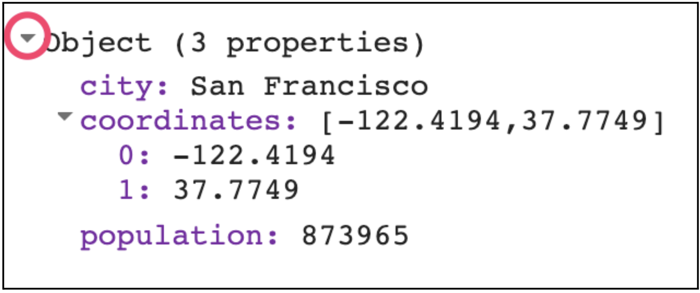
Functions
While using Earth Engine, you will need to define your own functions. Functions take user inputs, use them to carry out some computation, and send an output back. Functions allow you to group a set of operations together and repeat the same operations with different parameters without having to rewrite them every time. Functions are defined using the function keyword. The code below defines a function called greet that takes an input called name and returns a greeting with Hello prefixed to it. Note that we can call the function with different input and it generates different outputs with the same code.
var greet = function(name) {
return 'Hello ' + name;
};
print(greet('World'));
print(greet('Readers'));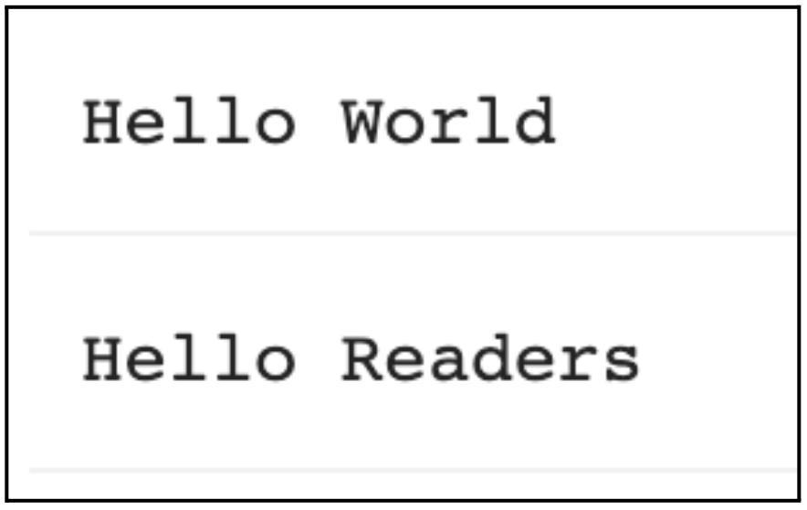
Section 3. Earth Engine API Basics
The Earth Engine API is vast and provides objects and methods to do everything from simple math to advanced algorithms for image processing. In the Code Editor, you can switch to the Docs tab to see the API functions grouped by object types. The API functions have the prefix ee (for Earth Engine).
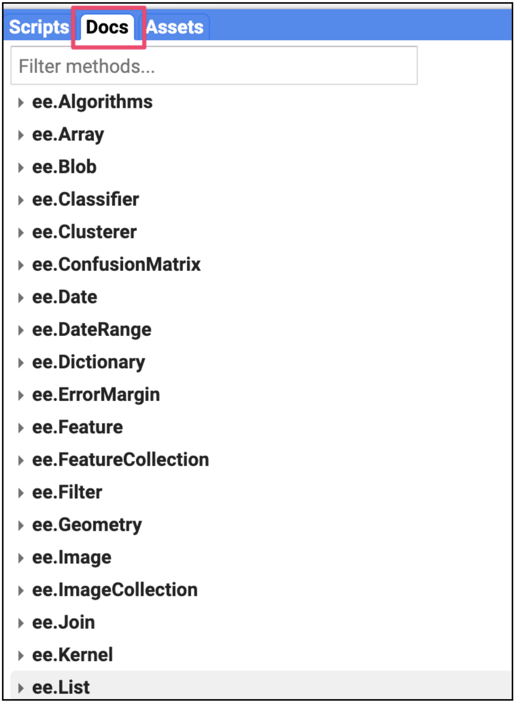
Let’s learn to use the API. Suppose you want to add two numbers, represented by the variables a and b , as below. Make a new script and enter the following:
var a = 1;
var b = 2;In Section 2.1, you learned how to store numbers in variables, but not how to do any computation. This is because when you use Earth Engine, you do not do addition using JavaScript operators. For example, you would not write “var c = a + b” to add the two numbers. Instead, the Earth Engine API provides you with functions to do this, and it is important that you use the API functions whenever you can. It may seem awkward at first, but using the functions, as we’ll describe below, will help you avoid timeouts and create efficient code.
Looking at the Docs tab, you will find a group of methods that can be called on an ee.Number. Expand it to see the various functions available to work with numbers. You will see the ee.Number function that creates an Earth Engine number object from a value. In the list of functions, there is an add function for adding two numbers. That’s what you use to add a and b.
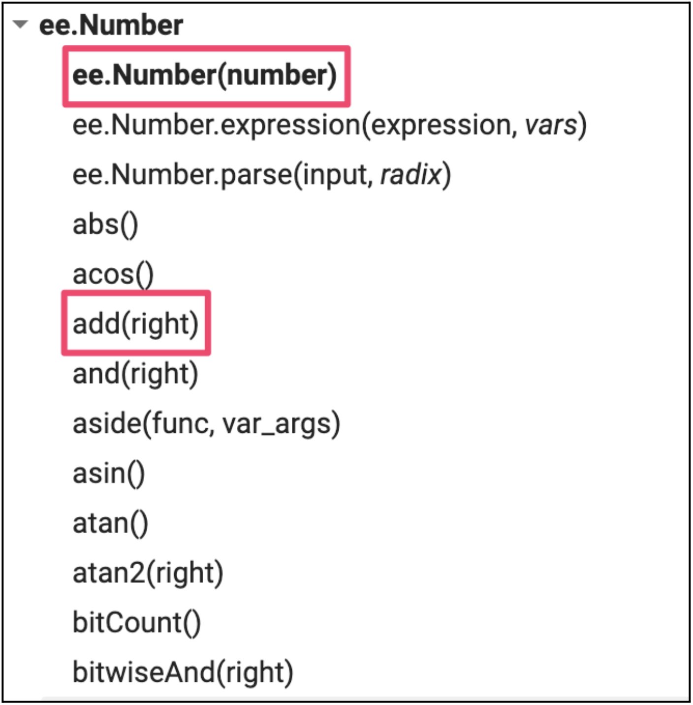
ee.Number moduleTo add a and b, we first create an ee.Number object from variable a with ee.Number(a). And then we can use the add(b) call to add the value of b to it. The following code shows the syntax and prints the result which, of course, is the value 3.
var result = ee.Number(a).add(b);
print(result);By now you may have realized that when learning to program in Earth Engine, you do not need to deeply learn JavaScript or Python—instead, they are ways to access the Earth Engine API. This API is the same whether it is called from JavaScript or Python.
Here’s another example to drive this point home. Let’s say you are working on a task that requires you to create a list of years from 1980 to 2020 with a five-year interval. If you are faced with this task, the first step is to switch to the Docs tab and open the ee.List module. Browse through the functions and see if there are any functions that can help. You will notice a function ee.List.sequence. Clicking on it will bring up the documentation of the function.
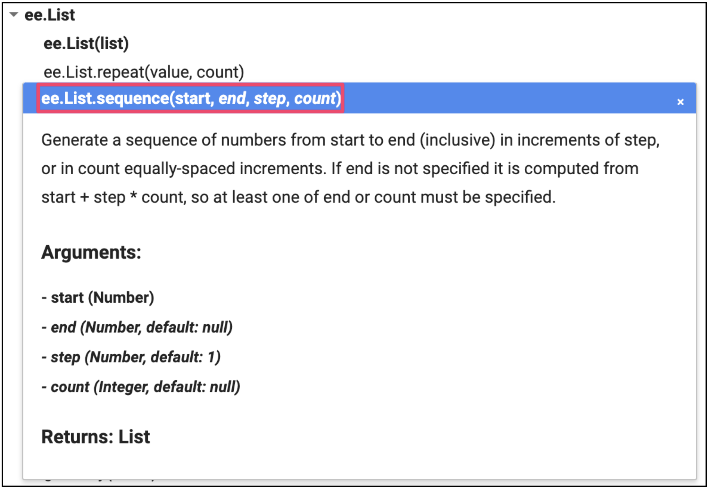
ee.List.sequence functionThe function ee.List.sequence is able to generate a sequence of numbers from a given start value to the end value. It also has an optional parameter step to indicate the increment between each number. We can create a ee.List of numbers representing years from 1980 to 2020, counting by 5, by calling this predefined function with the following values: start = 1980, end = 2020, and step = 5.
var yearList = ee.List.sequence(1980, 2020, 5);
print(yearList);The output printed in the Console will show that the variable yearList indeed contains the list of years with the correct interval.
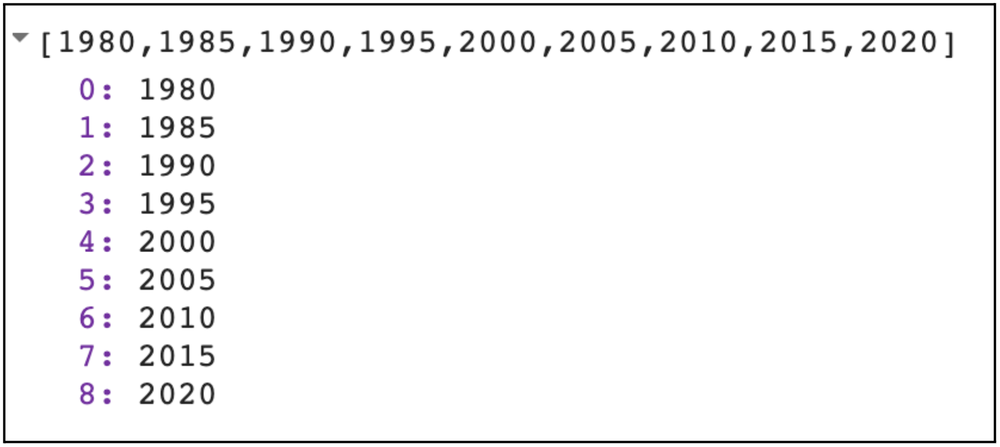
ee.List.sequence functionYou just accomplished a moderately complex programming task with the help of Earth Engine API.
Code Checkpoint F10b. The book’s repository contains a script that shows what your code should look like at this point.
Synthesis
Assignment 1. Suppose you have the following two string variables defined in the code below. Use the Earth Engine API to create a new string variable called result by combining these two strings. Print it in the Console. The printed value should read “Sentinel2A.”
var mission = ee.String('Sentinel');
var satellite = ee.String('2A');Hint: Use the cat function from the ee.String module to “concatenate” (join together) the two strings. You will find more information about all available functions in the Docs tab of the Code Editor.
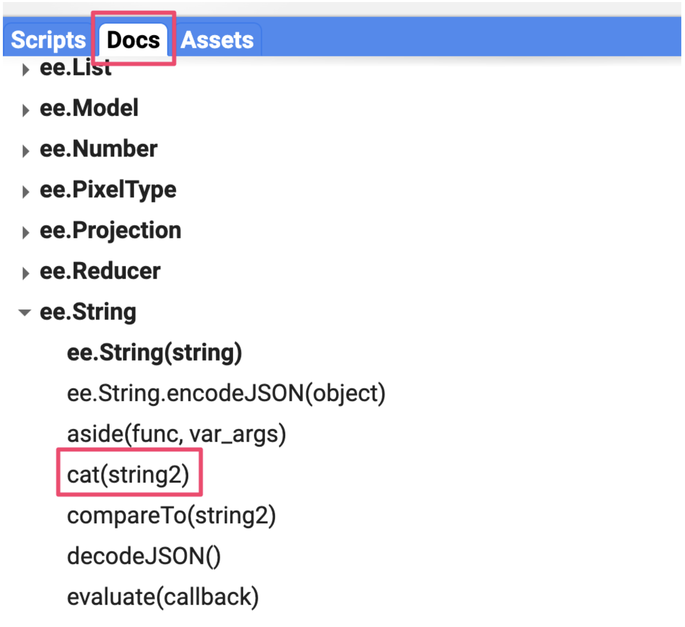
ee.String moduleConclusion
This chapter introduced the Earth Engine API. You also learned the basics of JavaScript syntax to be able to use the API in the Code Editor environment. We hope you now feel a bit more comfortable starting your journey to become an Earth Engine developer. Regardless of your programming background or familiarity with JavaScript, you have the tools at your disposal to start using the Earth Engine API to build scripts for remote sensing analysis.
Feedback
To review this chapter and make suggestions or note any problems, please go now to bit.ly/EEFA-review. You can find summary statistics from past reviews at bit.ly/EEFA-reviews-stats.
Comments
While writing code, it is useful to add a bit of text to explain the code or leave a note for yourself. It is a good programming practice to always add comments in the code explaining each step. In JavaScript, you can prefix any line with two forward slashes // to make it a comment. The text in the comment will be ignored by the interpreter and will not be executed.
The Code Editor also provides a shortcut—Ctrl + / on Windows, Cmd + / on Mac—to comment or uncomment multiple lines at a time. You can select multiple lines and press the key combination to make them all comments. Press again to reverse the operation. This is helpful when debugging code to stop certain parts of the script from being executed.
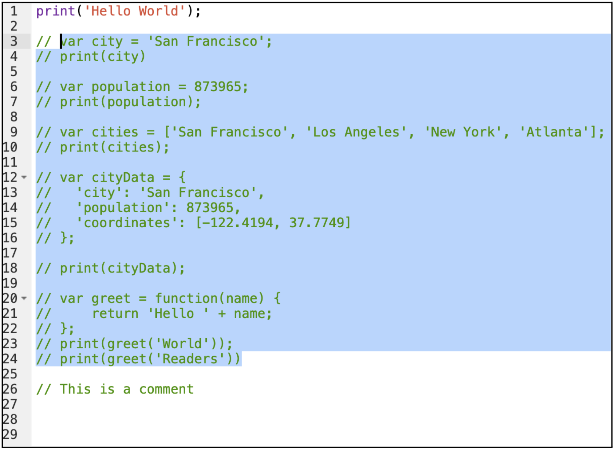
Congratulations! You have learned enough JavaScript to be able to use the Earth Engine API. In the next section, you will see how to access and execute Earth Engine API functions using JavaScript.
Code Checkpoint F10a. The book’s repository contains a script that shows what your code should look like at this point.